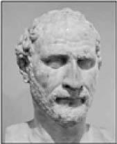
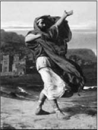

Demosthenes
Demosthenes (MÖ 384-322)
“En kolay şey insanın kendisini aldatmasıdır, çünkü bir insan genellikle arzu ettiği şeyin gerçek olduğuna inanır.”
MÖ 384 yılında doğan Demosthenes, varlıklı bir aileden geliyordu. Ancak babasını yedi yaşında kaybetmesinin ardından kendisine düşen mirası alamayan Demosthe-nes, geçimini sağlamak için dönemin mesleği logograflık (sözcük yazımı) yapmaya başladı.
İlerleyen yıllarda Atina’da oldukça popüler olan hitabet sanatına yönelmek istediyse de kekeme olması onu fazlasıyla engelliyordu. Halka ne zaman hitap etmek istese, onu ciddiye almıyor ve sözlerine kahkahalarla gülüyorlardı. Fakat onun söyleyecek sözü vardı ve bunu dinletmeyi başarmalıydı. Artık kendisine acımaktan çok düşüncelerini bu sorunu nasıl çözeceğine yoğunlaştırmaya başlamıştı.
Deniz kıyısına gitti ve bu düşüncelerle dolaşırken aklına bir fikir geldi. Ağzına aldığı çakıl taşlarıyla kıyıya vuran dalgaların gürültüsünü susturmak istercesine çalışmaya başladı. Günlerce nefesini güçlendirmek ve konuşmasını düzeltmek için uğraştı.
Uzun bir süre sonra tekrar kürsüye çıktığında artık halk ne söylediğini dinlemeye başladı. Hatta bu konuda o kadar iyi hâle geldi ki dönemin tüm hatiplerini geride bırakarak tarihe geçmeyi bile başardı.

Demosthenes deniz kenarında konuşma çalışması yaparken, Ressam Jean Lecomte du Nouy
Symmoriai Üzerine (354), Megalopolisliler İçin (353), Birinci Philippik (351), Rodosluların Özgürlüğü İçin ve Mali Örgütlenme Üzerine (350) adlı söylevleri ünlüdür.
Otuz yaşına geldiğinde politikaya adım attı. Demokrasinin önemli savunucularından olan Demosthenes, o yıllarda bağımsızlıklarını tehdit eden tehlikeyi görmüş ve Atina halkını Makedon Kralı Philip’e karşı uyarmaya çalışmıştı. Ancak hitabeti güçlü olmasına rağmen Atina halkı onu bu konuda ciddiye almamıştı. 76
Yine bir gün bu konuda halkın karşısında konuşurken sözlerinin dinlenmediğini anlayan Demosthenes, gürültü eden Atinalılara karşı sözlerine şöyle devam etmiş:
“Konuşmamı bitiriyorum, fakat size birkaç cümlelik bir hikâye anlatacağım: Vaktiyle bir delikanlı Atina’dan Megara’ya gitmek için bir eşek kiralamıştı. Eşeğini kiraya veren adam da aynı yere işi düştüğü için birlikte yola çıkmışlardı. Konuşa konuşa giderlerken öğle sıcağı bastırmıştı.
Biraz dinlenmek ve öğle yemeğini yemek için birlikte bir su başına çökmüşler. Ama ortalıkta gölge edecek bir şey olmadığından eşeğin sahibi, eşeğinin gölgesine sığınmış. Eşeği kiralayan genç bunun üzerine, ‘Sen çekil ben oturacağım oraya,’ demiş. Öteki, ‘Ne münasebet, eşek benim’ deyince kiracı ‘İyi ama onu ben kiraladım’ diye itiraz etmiş.
‘Ben eşeği kiraya verdim, gölgesini değil’ demiş eşek sahibi. Derken aralarında kavga çıkmış.”
Demosthenes, sözün tam burasında kürsüden inmiş. Halk merakla “Sonra ne olmuş, hikâyenin sonunu neden anlatmıyorsun?” diye söylenmeye başlayınca yeniden kürsüye yönelmiş ve “Ey ahali! Sizin iyiliğiniz için laf edeyim dedim, dinlemediniz. Fakat iş bir eşeğin gölgesi olunca bakıyorum da fazlasıyla dikkat kesiliyorsunuz!” demiş.
İleride oluşabilecek istilaya karşı Atina halkını uyardığı konuşmalar hitabet tarzının en güzel örnekleri arasında yerini almıştır. Ancak tüm bu uğraşlara rağmen Makedon Kralı Philip’in oğlu İskender, Yunanistan’ın tamamını ele geçirmeyi başardı.